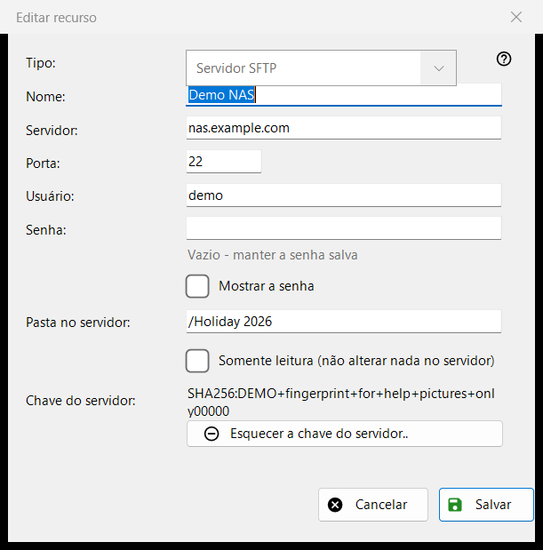
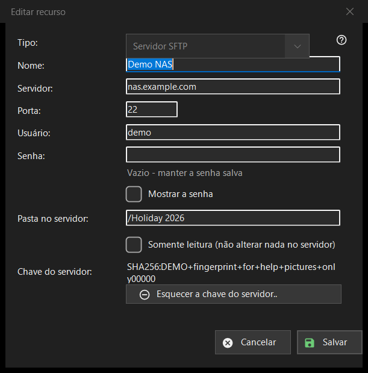

Editar recurso
Finalidade
O formulário de um servidor ou de uma pasta de rede salvos. «Adicionar..» na lista de recursos o abre vazio com o título «Novo recurso», «Editar..» o abre preenchido como «Editar recurso», e um endereço sftp:// digitado na caixa de pasta o abre já preenchido.


Nesta ordem
- Escolha o tipo: servidor SFTP ou pasta de rede (SMB).
- Dê um nome ao recurso e informe o endereço do servidor e a porta, ou o caminho de rede.
- Informe o usuário e a senha.
- Defina a pasta no servidor e ative somente leitura se nada deve mudar lá.
- Pressione «Salvar».
Os elementos
Tipo
«Tipo:» é escolhido ao criar o recurso: «Servidor SFTP» (porta 22, pasta /) ou «Pasta de rede (SMB)». Em um recurso salvo a lista fica desativada, porque a senha salva e a chave do servidor pertencem a um só tipo. Para SMB o campo do endereço se chama «Pasta de rede:» e aceita um caminho como \\server\folder; os campos de porta e de pasta valem só para SFTP.
Nome, servidor e porta
«Nome:» é o que a lista mostra; se estiver vazio, o endereço do servidor é usado. «Servidor:» é um nome ou um endereço IP e «Porta:» um número de 1 a 65535. Mudar o servidor ou a porta descarta os outros endereços que vieram com um recurso importado, para que uma senha salva nunca vá para um endereço que você não digitou.
Usuário e senha
«Usuário:» e «Senha:». A senha é salva criptografada para a sua conta do Windows; a lista contém apenas uma referência a ela. Em um recurso salvo a caixa fica vazia com a dica «Vazio - manter a senha salva»: digite algo só para substituí-la. «Mostrar a senha» começa desativado. Um recurso novo precisa de uma senha.
Pasta e somente leitura
«Pasta no servidor:» é a pasta que o programa abre primeiro, um caminho que começa com /. «Somente leitura (não alterar nada no servidor)» faz o programa tratar o recurso como de somente leitura: nenhuma movimentação ou cópia para dentro dele, nenhuma exclusão ou renomeação nele.
Chave do servidor
«Chave do servidor:» mostra a impressão digital lembrada para este servidor, ou diz que ela aparecerá na primeira conexão, onde você a confirma. «Esquecer a chave do servidor..» só aparece quando há uma chave lembrada. Pergunta antes (a resposta padrão é Não) e explica: se o servidor foi reinstalado, isso é normal; caso contrário, alguém pode estar se passando por ele. Apaga apenas a chave: a próxima conexão mostra a nova impressão digital e pergunta de novo.
Salvar
«Salvar» verifica os campos e nomeia o primeiro problema em vermelho abaixo deles: endereço, porta, pasta, nome de usuário ou uma senha ausente. «Cancelar» fecha o formulário sem alterações.